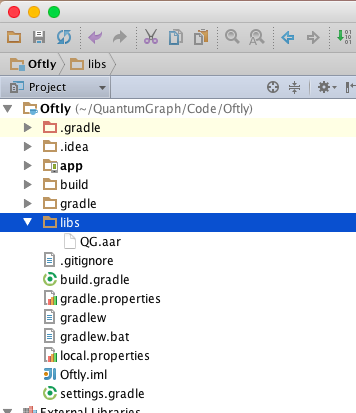

Integrating QGraph SDK¶
Integration in Android Studio App¶
Download QG.aar from http://app.qgraph.io/static/sdk/android/QG.aar.
Put it in /libs folder of your app. Make a /libs folder if it does not already exist.
Right click on project name and click on “Open Module Settings”

Click on “+” button at the top left corner, select “Import .AAR package” option and navigate to QG.aar file in /libs folder of your app.

In the same window, select your app in “Modules” sections from left, select “Dependecies” tab in top menu and click “+” button at bottom left. Select “Module dependency” and add “QG” as dependency. Select “OK” once that is done.

Using Android SDK¶
Follow these steps to use our android SDK
Import QG SDK in your activity¶
In all the activity classes, starting with the class for the main activity, import QG SDK:
import com.quantumgraph.sdk.QG;
Initialization and cleanup of SDK¶
In the onStart() function of your activity, do the following:
QG qg = QG.getInstance();
qg.onStart(getApplicationContext(), <your app id>, <your sender id>);
App id for your app is available from the settings page. Sender id is a string that Google provides to you for getting registration id for users. You will get the sender id for your app during the set up phase in our web interface.
In the onStop() function of your activity, do the following:
QG qg = QG.getInstance();
qg.onStop();
Logging user profiles¶
User profiles are information about your users, like their name, city, date of birth or any other information that you may wish to track. You log user profiles by using one or more of the following functions:
qg.setUserId(String userId);
userId is the id of the user. It might be email, or username, or facebook id, or any other form of id that you may wish to keep.
Other functions that you may user are:
qg.setName(String name);
qg.setFirstName(String firstName);
qg.setLastName(String lastName);
qg.setCity(String city);
qg.setEmail(String email);
qg.setDayOfBirth(int day);
qg.setMonthOfBirth(int month);
qg.setYearOfBirth(int year);
Other than these functions, you can log your own custom user parameters. You do it using:
qg.setCustomUserParameter(String key, E value);
For instance, you may wish to have the user’s current rating like this:
qg.setCustomUserParameter("current_rating", 123);
As implied by the function definition, the value can be of any data type.
Once user profile is set, you can use this to create personalized messages (For example: “Hi John, exciting deals are available in Mountain View”), or to create user segments (For example you can create a segment of users who were born after 1990 and live in Mountain View)
Logging events¶
Events are the activities that a user performs in your app, for example, view the products, playing a game or listening to a music. Each event has a name (for instance, the event of viewing a product is called product_viewed), and can have some parameters. For instance,
for event product_viewed, the parameters are id (the id of the product viewed), name (name of the product viewed), image_url (image url of the product viewed), deep_link (a deep link which takes one to the product page in the app), and so on.
It is not necessary that you provide all the parameters for a given event. You can choose to provide whatever parameters are relevant to you.
Once you log event information to use, you can segment users on the basis of the events (For example, you can create a segment consisting of users have not launched for past 7 days, or you can create a segment consiting of users who, in last 7 days, have purchased a product whose value is more than $1000)
You can also define your events, and your own parameters for any event. However, if you do that, you will need to sync up with us to be able to segment the users on the basis of these events or customize your creatives based on these events.
Here is how you set up some of the popular events.
Registration Completed
This event does not have any parameters:
QG qg = QG.getInstance();
JSONObject registrationDetails = new JSONObject();
try {
qg.logEvent("registration_complted", registrationDetails);
}
Category Viewed
This event has one paraemter:
QG qg = QG.getInstance();
JSONObject categoryDetails = new JSONObject();
try {
categoryDetails.put("category", "apparels");
}
qg.logEvent("category_viewed", productDetails);
Product Viewed
You may choose to have the following fields:
QG qg = QG.getInstance();
JSONObject productDetails = new JSONObject();
try {
productDetails.put("id", "123");
productDetails.put("name", "Nikon Camera");
productDetails.put("image_url", "http://mysite.com/products/123.png");
productDetails.put("deep_link", "myapp//products?id=123");
productDetails.put("type", "new");
productDetails.put("category", "electronics");
productDetails.put("brand", "Nikon");
productDetails.put("color", "white");
productDetails.put("size", "small");
productDetails.put("price", 6999);
}
qg.logEvent("product_viewed", productDetails);
Product Added to Cart:
QG qg = QG.getInstance();
JSONObject productDetails = new JSONObject();
try {
productDetails.put("id", "123");
productDetails.put("name", "Nikon Camera");
productDetails.put("image_url", "http://mysite.com/products/123.png");
productDetails.put("deep_link", "myapp//products?id=123");
productDetails.put("type", "new");
productDetails.put("category", "electronics");
productDetails.put("brand", "Nikon");
productDetails.put("color", "white");
productDetails.put("size", "small");
productDetails.put("price", 6999);
}
qg.logEvent("product_added_to_cart", productDetails);
Product Added to Wishlist:
QG qg = QG.getInstance();
JSONObject productDetails = new JSONObject();
try {
productDetails.put("id", "123");
productDetails.put("name", "Nikon Camera");
productDetails.put("image_url", "http://mysite.com/products/123.png");
productDetails.put("deep_link", "myapp//products?id=123");
productDetails.put("type", "new");
productDetails.put("category", "electronics");
productDetails.put("brand", "Nikon");
productDetails.put("color", "white");
productDetails.put("size", "small");
productDetails.put("price", 6999);
}
qg.logEvent("product_added_to_wishlist", productDetails);
Product Purchased:
QG qg = QG.getInstance();
JSONObject productDetails = new JSONObject();
try {
productDetails.put("id", "123");
productDetails.put("name", "Nikon Camera");
productDetails.put("image_url", "http://mysite.com/products/123.png");
productDetails.put("deep_link", "myapp//products?id=123");
productDetails.put("type", "new");
productDetails.put("category", "electronics");
productDetails.put("brand", "Nikon");
productDetails.put("color", "white");
productDetails.put("size", "small");
productDetails.put("price", 6999);
}
qg.logEvent("product_purchased", productDetails);
Checkout Initiated:
QG qg = QG.getInstance();
JSONObject checkoutDetails = new JSONObject();
try {
productDetails.put("num_products", 2);
productDetails.put("cart_value", 12998.44);
productDetails.put("deep_link", "myapp://myapp/cart");
}
qg.logEvent("checkout_initiated", checkoutDetails);
Checkout Completed:
QG qg = QG.getInstance();
JSONObject checkoutCompleted = new JSONObject();
try {
productDetails.put("num_products", 2);
productDetails.put("cart_value", 12998.44);
productDetails.put("deep_link", "myapp://myapp/cart");
}
qg.logEvent("checkout_completed", checkoutDetails);
Product Rated:
QG qg = QG.getInstance();
JSONObject rating = new JSONObject();
try {
rating.put("id", "1232");
rating.put("rating", 2);
}
qg.logEvent("product_rated", rating);
Searched:
QG qg = QG.getInstance();
JSONObject search = new JSONObject();
try {
search.put("id", "1232");
search.put("rating", 2);
}
qg.logEvent("product_rated", rating);
Reached Level:
QG qg = QG.getInstance();
JSONObject level = new JSONObject();
try {
level.put("level", 23);
}
qg.logEvent("level", rating);
Your custom events
Apart from above predefined events, you can create your own custom events, and have custom parameters in them:
QG qg = QG.getInstance();
JSONObject json = new JSONObject();
try {
json.put("my_param", "some value");
json.put("some_other_param", 123);
json.put("what_ever", 1234.23);
}
qg.logEvent("my_custom_event", json);